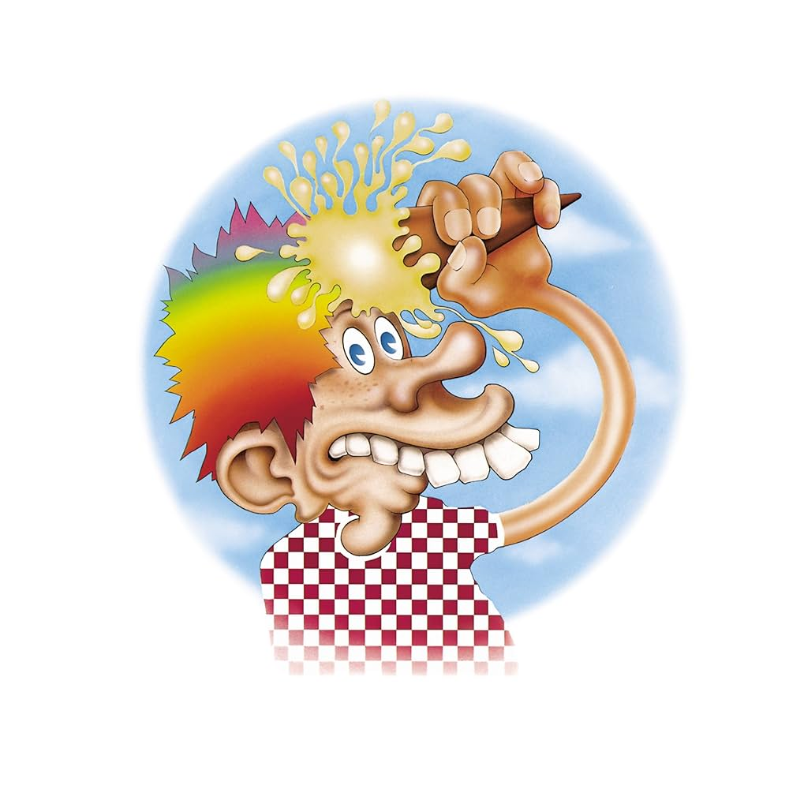

Europe '72 the Greatful Dead, Released November 1st 1972, length 109 minutes.
Tracklist: "Cumberland Blues" "He's Gone" "One More Saturday Night" "Jack Straw"
"You Win Again" "China Cat Sunflower""I Know You Rider" "Brown-Eyed Women"
"Hurts Me Too" "Ramble On Rose" "Sugar Magnolia""Mr. Charlie" “Tennessee Jed"
"Truckin'" "Epilog" "Prelude" "Morning Dew"
Recorded from April - November of 1972, Europe ‘72 is a compilation of all of - as the title suggests - the best songs from the live shows that The Grateful Dead perfomed during their 1972 European tour. The Tour was such a large expence for the Warner Brothers and Grateful Dead that they resolved to record all of the shows and release them on vinyl to make up for the costs of the tour. At the end of the tour the best performances were compiled to release another record alongside all of the indivual performances that had been recorded and released.